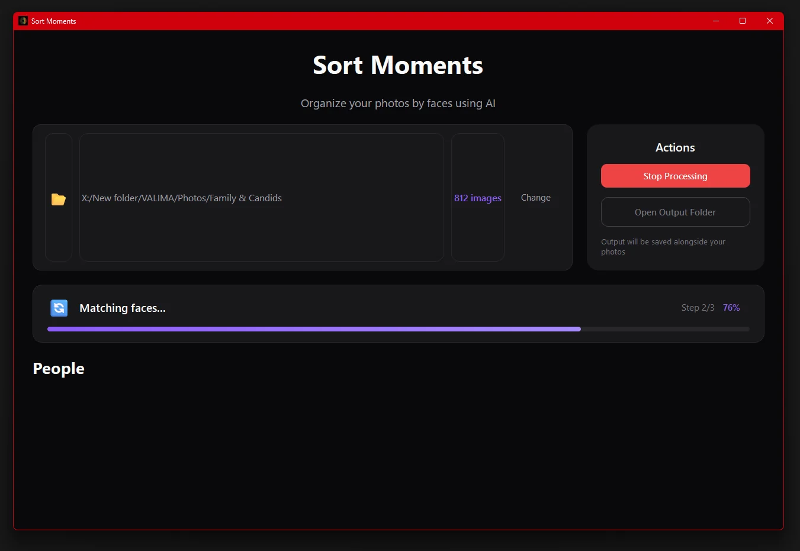
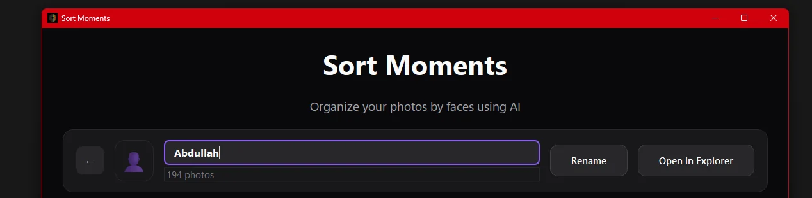
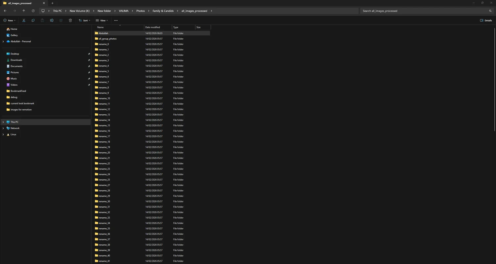
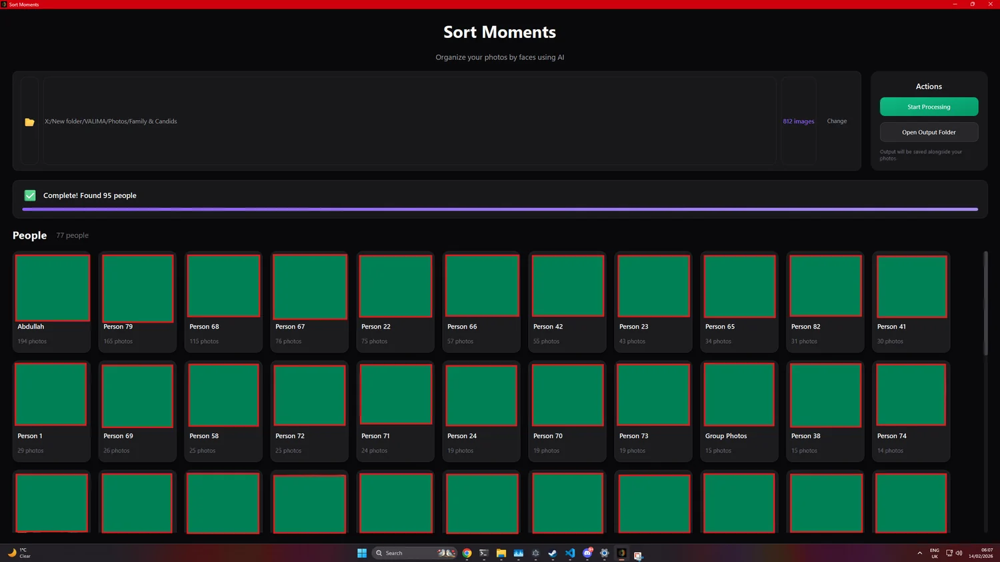

01
Pick the mess.
Old exports, trips, weddings, external drives. The usual evidence locker.
Local photo sorting
Point it at a folder. It groups matching faces and gives you normal folders back. No signup wall. No cloud middleman pretending your memories need a subscription.




Workflow
Three boring steps. That is the point. The app does the face grouping; you keep control of the names and files.
Old exports, trips, weddings, external drives. The usual evidence locker.
The model makes groups. You decide what the folders are called.
Normal files. Normal folders. A radical position, apparently.
Privacy
Sort Moments is built for the folders people avoid until a hard drive starts making noises: family events, old phones, trips, shared drives.
It is not a magic vault. It is a local desktop app. That is the privacy story.
Developers
organize_photos("Family & Candids")
python sortmoments_cli.py organize ./photos
Demo
Answers
No. Sorting happens locally on your desktop. The cloud does not need a copy of your family album to prove it has machine learning.
Windows 10/11 and macOS Apple Silicon beta. The CLI and Python library are there if you would rather automate the job.
Yes. Sort Moments is free and open source under the MIT license. Suspiciously reasonable, but true.